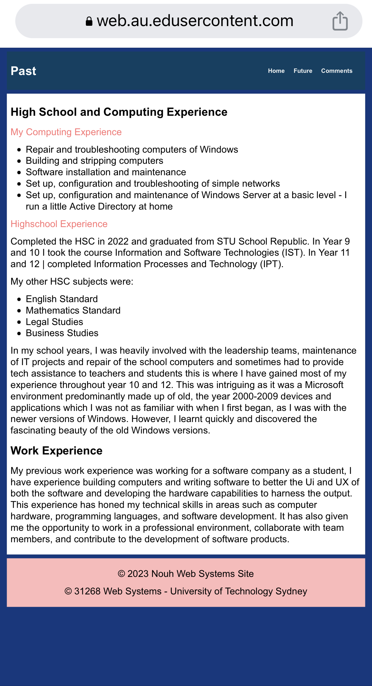

Overall Design Reflection
As someone who has created a website before, I am happy with the outcome of my site. It is simple yet effective, with a beautiful design that captures the essence of what I wanted to convey. The navigation is straightforward and easy to use for the end user, which makes the overall experience enjoyable. Moreover, the content is organised in a logical manner, making it easy to find the information users are looking for. Of course, I acknowledge that there is always room for improvement, but I am content with what I have achieved thus far. Overall, creating a website is a fulfilling experience that allows you to showcase your creativity and technical skills.
Technical Aspects
The structure of my website consists of four pages: the home (index) page, past page, future page, and comments page. I have used CSS selectors to style the HTML elements on each page and created a separate CSS file containing all my styles. This approach has helped me keep my code organised and easy to maintain. One of the techniques I used to style my content was the use of classes. I used types to apply styles to groups of ingredients with similar characteristics, such as headings and paragraphs. For instance, I used a variety to style all the headers on my website with a particular font and colour, which was pinkish or redish, white and blue. This technique allowed me to apply a consistent style to similar elements across my website. Furthermore, I used an ID to style the header element on each page since it's unique and appears on every page. Using ID allowed me to apply a unique style to the header element without affecting other elements on the page. In addition to using classes and IDs and a div to wrap around the main content area on each page. This technique allowed me to group related content and apply a consistent style to the main content area. I also used a span to apply a unique style to the specific text within a paragraph. This technique helped me draw attention to critical pieces of information in my content and make them stand out from the rest of the text. Lastly, I included a table on my past experiences page to display a list of my computing-related experiences in a clear and organised way. I also had a list on my future aspirations page to outline my goals. Both these elements helped me present my information in an easy-to-understand format and make my content more accessible to my audience.
| Filename | Title | File Type | Deception |
|---|---|---|---|
| Index.html | Home | HTML File | The homepage of the website |
| Past.html | Past | HTML File | Description of my past |
| Future.html | Future | HTML File | Description of my future |
| Comments.html | Comments | HTML File | Some comments and explanations of the website |
| Websystems.css | N/A | CSS File | The stylesheet that controls the aeshetics of the website |
Aesthetics
As I mentioned earlier, my main goal with the design was to create a clean, professional-looking website that is easy to read and navigable. To achieve this, I chose a simple colour scheme with good contrast. The selected colours provide in my opinion were excellent visual separation between website elements while pleasing the eye :) a great example of this is leenheyne . Regarding typography, I chose a sans-serif font for the body text. This font choice was made because it is known to be more legible on screens, which is especially important since my website is intended to be read on electronic devices. I also used a slightly larger font size for headings to create a visual hierarchy that makes it easier for users to scan the page and find the necessary information quickly. Moreover, I included a small amount of white space between elements of the website to give the site a more open and airy feel. This also helps to create a more approachable and welcoming look and sense, which was essential to me since my website is meant to be a platform for sharing my experiences and aspirations. I am happy with the aesthetics of my website and believe it achieves my goal of being professional-looking, approachable and Simple.
Accessibility
| In creating my website, I placed a great deal of emphasis on accessibility to ensure that all users,
regardless of their abilities, could access and navigate the content. As you know, accessibility is
an essential aspect of web design that is often overlooked, but I am proud to say that I took great
care to make my site accessible to everyone. To achieve this goal, I implemented several key features.
Firstly, I chose high-contrast colours for the site's design to ensure that the content was legible
for users with visual impairments. The high contrast between the background and text makes it easy
for these users to read the content on the site. I also used semantic HTML elements to ensure that the
site was easy to navigate with a screen reader. These elements make it easy for screen readers to parse
the site's content and provide users with a clear and concise representation of the site's structure.
Another crucial accessibility feature I included was the use of alt text for all images. The alt text provides context for users who cannot see the images themselves, allowing them to understand the content and context of the images. Finally, I made sure to avoid any design elements that could trigger seizures or other adverse reactions. This included avoiding flashing or rapidly blinking elements that could cause problems for users with photosensitive epilepsy or other seizure disorders. In summary, I have to say that I have designed a website that is accessible to everyone, regardless of their abilities. I believe that this is an essential aspect of web design, and I am committed to ensuring that my sites are accessible to all users in the future. |

|